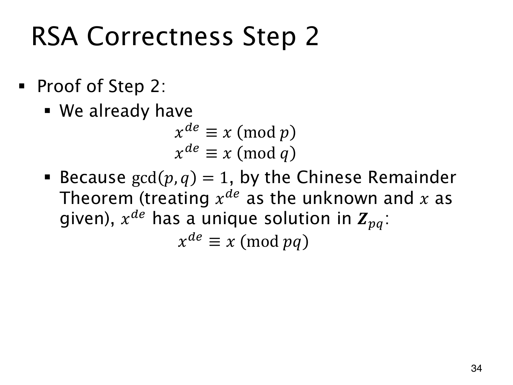

L1.14 · 第 34 页讲解原文
查看这一页课件

用中国剩余定理完成 RSA 证明
现在对任意消息整数 x，已经得到
xed≡x(modp),xed≡x(modq).
考虑以 z 为未知数的同余方程组
{z≡x(modp),z≡x(modq).
z=x 显然是解，而前面的证明说明 z=xed 也是解。由于 p,q 是不同素数，gcd(p,q)=1，中国剩余定理保证这个方程组在模 pq 下只有一个解类。因此两个解必定同余：
xed≡x(modpq).
也可以直接看差值：p 和 q 都整除 xed−x，又因为它们互素，乘积 pq 也整除这个差。
回到 RSA 的加密、解密流程。令 n=pq，加密得到 C=xemodn，于是
Cd≡xed≡x(modn).
原消息满足 0≤x<n，解密也取 0 到 n−1 之间的标准余数。同一个同余类在这个范围里只有一个代表，所以
Cdmodn=x.
证明中，逆元条件确定了指数 ed 的形式，费马小定理处理非零余数，整除关系处理零余数，最后由互素性和中国剩余定理合并。这些步骤共同覆盖了包括 p∣x 或 q∣x 在内的消息。
所得等式证明加密后的明文能够正确恢复。保密性、签名安全和身份认证还各有协议要求，不能仅由恢复等式推得。